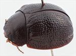
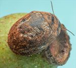
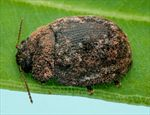
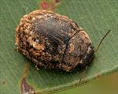
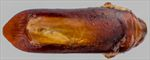
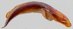
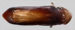
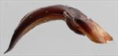
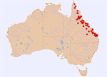

Click on images to enlarge
{kind=link}

Male, Childers, Queensland
{kind=link}

Female, Charters Towers, Northern Queensland
{kind=link}

Male, Belyando Crossing, Northern Queensland
{kind=link}

Female, Maryborough, Queensland
{kind=link}

Aedeagus, dorsal view (Childers, Queensland)
{kind=link}

Aedeagus, lateral view (Childers, Queensland)
{kind=link}

Aedeagus, dorsal view (Laura, Northern Queensland)
{kind=link}

Aedeagus, lateral view (Laura, Northern Queensland)
{kind=link}

Distribution
Name
Trachymela sp. Ta47
Reference specimen
25-052436, Carnarvon N.P., Central Queensland.
Adult Description
Length: ♂ 5.6–6.8 mm (n=52), ♀ (6.0)6.5–8.0 mm (n=59).
Colouration:
- Head: uniformly dark reddish-brown with black-tipped mandibles, labrum sometimes yellowish-brown; antennomeres 1–3 light-brown, 4–11 grading darker to much darker (rarely almost black) towards apex, dark colouring often more intense along distal and/or lateral margins of antennomeres.
- Pronotum: uniformly reddish-brown, concolorous with head or fractionally darker, sometimes very slightly darker along front margin of disc.
- Scutellum: brown, concolorous with or fractionally darker than adjacent area of pronotum.
- Elytra: brown, concolorous with or fractionally darker than pronotum with diffuse areas of slightly darker shade of brown scattered throughout, punctures concolorous with interstices or may be of the darker shade, humeral callus concolorous with surrounds.
- Venter & Legs: prosternum and thoracic ventrites very dark brown, legs similar, grading towards a slightly lighter shade towards proximal segments, abdominal ventrites similar to thoracic or slightly lighter in shade, elytral epipleura brown.
- Cuticular Wax: light- to mid-brown with a mostly dense and relatively even coverage over all except for a broad band along the elytral suture from around elytral summit to anterior edge in which the coverage is sparse or even absent; streaks of contrasting light-grey wax tend to border this area and a short streak of this lighter colour is also present in elytral marginal area slightly anteriorly to centre.
Morphology:
- Head: punctures moderately large (pd ≈ 2–2.5× ef) and quite evenly and densely distributed. Antennae short (AL/BL: ♂ 36–40%, ♀ 33–36%), filiform.
- Pronotum: almost evenly curved transversely, minimally explanate at extreme margins, foveal depression absent with a shallow, round elevation in the same place, discal area smooth, puncturation very clearly impressed, mostly somewhat larger than those on head and evenly distributed and moderately dense in discal area, a scatter of much finer punctures scattered among them, punctures becoming much coarser at lateral margins. Front margins join lateral margins in a smoothly rounded right-angle, with lateral margin straight for about 30% of length then curving smoothly and gradually towards rear margin.
- Scutellum: smooth and unpunctured (very rarely with one or two light punctures).
- Elytra: surface evenly curved transversely over discal region, not explanate at margins, lightly curved longitudinally in anterior half, then slightly more strongly curved, a barely perceptible depression extends across surface just in front of middle, punctures large and distinct, evenly distributed over almost all of surface, interstices relatively flat with very fine punctures scattered over them, more raised in apical third where they sometimes form extended, but inconspicuous, longitudinal weals, surface continuous or slightly discontinuous under humeral callus. Vertical extension of epipleura moderate (HCE/PW = 0.32–0.36).
- Venter: prosternal process very wide, usually almost parallel-sided, sometimes narrowing anteriorly, closed anteriorly, a scatter of long setae present along sides of prosternal process, a few shorter ones on mesoventrite, a single seta on anterior and median trochanter; front edge of metaventrite beveled, truncate; inner edge of posterior of epipleura lacking setae or rarely with a sparse scatter of short, curved ones.
Male Genitalia (Aedeagus):
- Dimensions: moderately-sized (LPE/BL = 29–35%).
- Dorsal view: sides of shaft sub-parallel from base to close to apex before converging in a straight line towards apex to form a broad triangular spatula, dorsal surface smoothly curved with faint and short dorso-median channel, tip clearly protruding, ostium relatively small.
- Lateral view: shaft lightly and almost evenly curved throughout its length, thinning gradually and evenly from about mid-point to prominent and clearly deflexed spatula.
Immature Stages
Unknown.
Similar species
- Ta172: This species is of a similar size to Ta47, it occurs on Corymbia sp. also and their patterns of cuticular wax are remarkably similar. The distributions of these species overlap. Ta172 is less uniform in dorsal colouring than Ta47, usually having patterned elytral surface of light brown and dark brown patches, and its elytral margins are narrower (HCE/PW = 0.29–0.32).
- Ta59: This species is smaller and differs in its more convex shape, the finer and more closely spaced punctures on the elytra, as well as the black colouration of the internal surface of the epipleura.
- Ta60: Another species that feeds on Corymbia species and lacks elytral verrucae, with distributions that broadly overlap. Individuals of both sexes are larger than those of Ta47, are darker in colour and have larger and less closely spaced punctures on the elytra. Its cuticular wax layer is mostly grey rather than the predominantly brown of Ta47, and its inner epipleural surfaces are black. Ta60 has prominent straight setae along the posterior third of the inner epipleural surface, which are lacking or very short and curved in Ta47.
- Ta62: A somewhat smaller species that occurs over much of the same area as Ta47. It may be distinguished by its narrower prosternal process (and different form of aedeagus).
- Ta92:
Notes
- Distribution & Abundance: Ta47 is an abundant species over much of eastern Queensland but seems to be absent from the far south-east.
- Host Associations: Individuals of this species have been mainly collected from brown bloodwood (Corymbia sp.) hosts, particularly the red bloodwood C. erythrophloia (n=22). It has also been collected from C. intermedia (n=9), C. clarksoniana (n=2) and C. terminalis (n=1), as well as 58 unspecified “Corymbia” records that may include Blakella species. 3 specimens at a single location were found on the ghost gum, Blakella tessellaris and a single specimen on the yellow bloodwood B. leichhardtii. A record from an unidentified stringybark species is certainly spurious.
- Morphological Variation: Ta47 is a rather variable entity and may represent a species complex. There is a large disparity in size between males and females, with their size distributions overlapping only slightly. The considerable spread in aedeagus dimensions and variations in some shape factors point towards this possibility. In particular, the spatula of some central and northern Queensland specimens (for example, 2005-242, 2020-111c and 2021-238a) is more pointed than is typical for this species and the aedeagus is narrower and more sinuate. Another specimen from far northern Queensland, [25-055271], has an exceptionally broad aedeagus. A male from Iron Range (Cape York Peninsula) at QM, with aedeagus extracted (though with apex broken off) is almost identical in most respects to typical Ta47, but the HCE/BL ratio is much lower (16.8%) than is typical for this species. Finally, the antennal separation (A-A/BL) forms two distinct clusters, with many North Queensland specimens having a value that is about 5% lower than in typical specimens of similar size.
Copyright © 2026. All rights reserved.